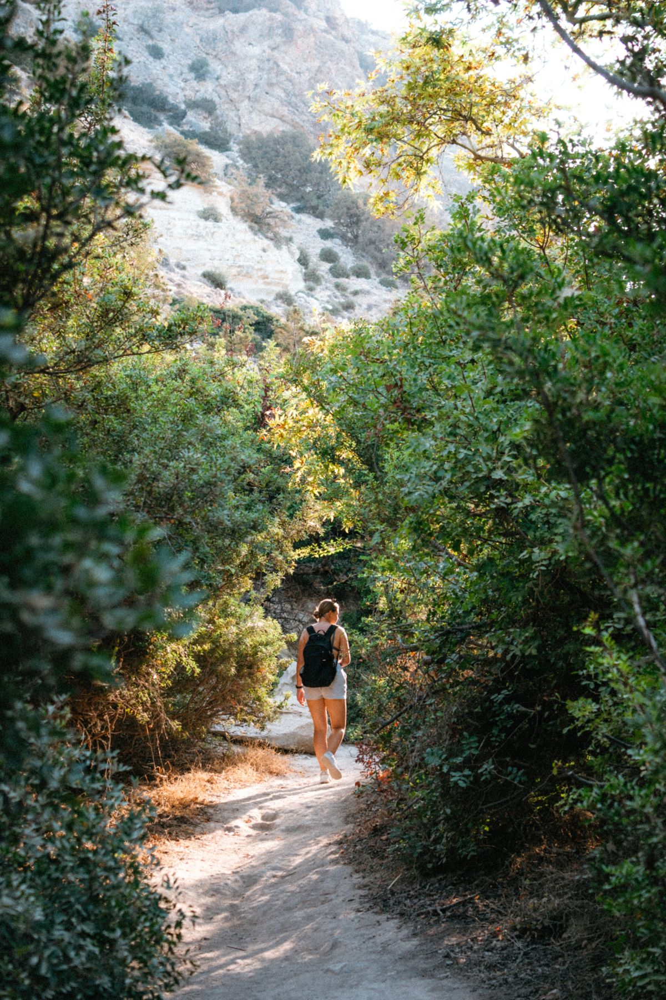
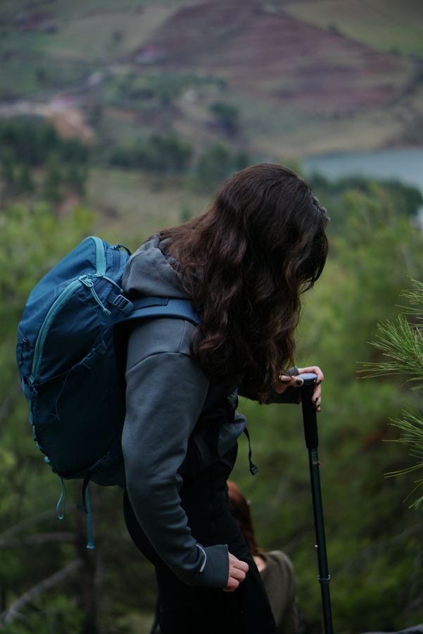

Marcher · expérimenter · se ressourcer
Parfois, on pense mieux en marchant.
La marche offre un espace différent pour se rencontrer, prendre du recul, retrouver confiance et expérimenter de nouvelles façons d'être en relation.
Un pas,
puis un autre.

Le mouvement comme ressource
Le corps, la nature, le collectif.
Le mouvement, la nature et la dynamique collective peuvent soutenir les ressources individuelles, favoriser le lien et ouvrir de nouvelles perspectives.

Engagement associatif
Colina & la marche itinérante
Depuis 2024, je suis membre du conseil d'administration de Colina, une association engagée autour de la marche itinérante.
J'accompagne depuis trois ans des marches itinérantes et je mesure ce qu'elles apportent aux personnes accompagnées : du lien, du recul, de la confiance retrouvée.
Propositions en développement
Des expériences à vivre
- 01Marche accompagnéeUn temps d'échange en mouvement, lorsque le cadre extérieur est pertinent.
- 02Expériences en naturePrendre du recul et se ressourcer dans un environnement inspirant.
- 03Ateliers & parcours collectifsExpérimenter ensemble, apprendre de l'expérience.
Ces propositions se construisent progressivement. Pour être informé·e des prochaines dates, écrivez-moi.